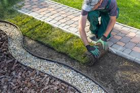

Pourquoi réaliser des travaux de maçonnerie pour votre jardin ?
Les éléments en dur apportent structure et esthétique à votre espace extérieur. Que ce soit pour des murets, des allées ou des escaliers, nos réalisations s’adaptent à votre style et à vos besoins.
Nos prestations en maçonnerie paysagère
- Murets et soutènements : Construction de murets en pierre, béton ou briques pour structurer votre jardin.
- Dallages et pavages : Pose de dalles et pavés pour créer des terrasses, allées et cours.
- Bordures : Installation de bordures en pierre ou béton pour délimiter vos parterres et allées.
- Escaliers de jardin : Création d’escaliers en pierre ou en béton pour faciliter l’accès aux différentes zones.
- Bassin et fontaines : Conception et réalisation d’éléments aquatiques pour un jardin plus apaisant.
- Murs de clôture : Élévation de murs solides pour protéger et embellir votre propriété.